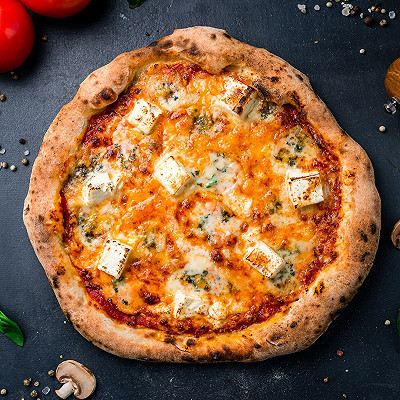

Pizza Recipe

Description
Dish of Neapolitan origin, made with bread dough shaped into a flatbread or pie, garnished with tomatoes, herbs and various ingredients (onions, cheese, olives, anchovies, mushrooms, ham, etc.) and cooked in the oven.
Ingredients
- Pizza Dough
- Tomato Sauce
- Mozzarella
- Olive Oil
- Salt and Pepper
- Cornmeal or Flour
Steps
- Preheat the oven to the highest temperature.
- Roll out the pizza dough on a floured surface to your desired thickness and shape.
- Transfer the dough to a pizza peel or a baking sheet dusted with cornmeal or flour./li>
- Spread tomato sauce evenly over the dough.
- Sprinkle a generous amount of cheese over the sauce.
- Add your desired toppings over the cheese.
- Drizzle olive oil over the pizza.
- Add salt and pepper.
- Bake in the oven until the crust is golden brown and the cheese has melted (~10 min).
- Enjoy !